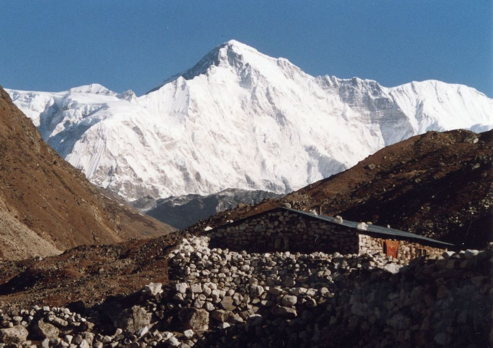
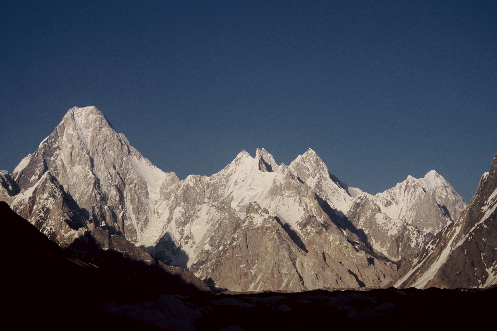
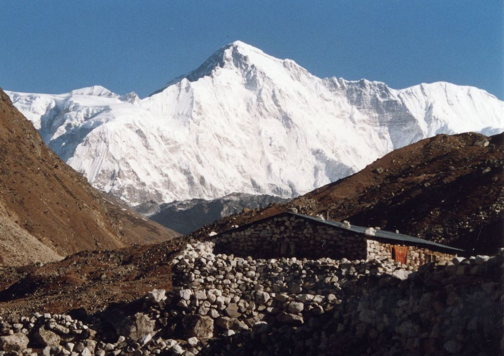
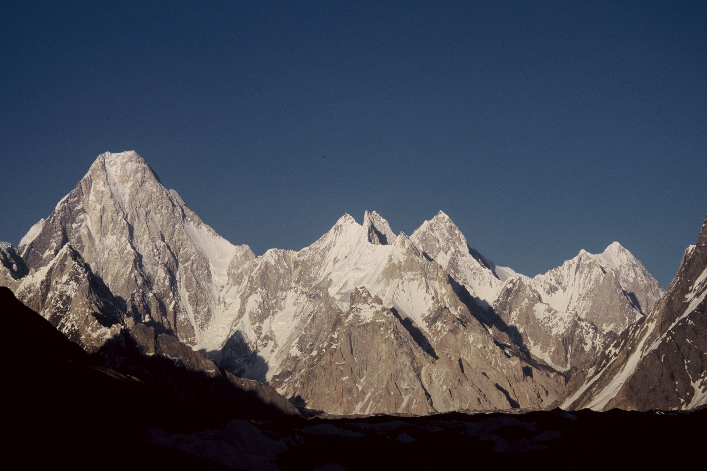

Самые высокие горы
 



Самая высокая вершина
Джомолунгма (Эверест)

Девять из 10 самых высоких вершин мира расположены в горной цепи Гималаи, и только одна из них – в горной системе Каракорум. За 40 лет в гималайских экспедициях участвовал 251 казахстанец, из них 172 казахстанца побывали на вершинах, поэтому нашим соотечественникам не понаслышке знакомо, что такое покорять высоты и какой ценой это дается.